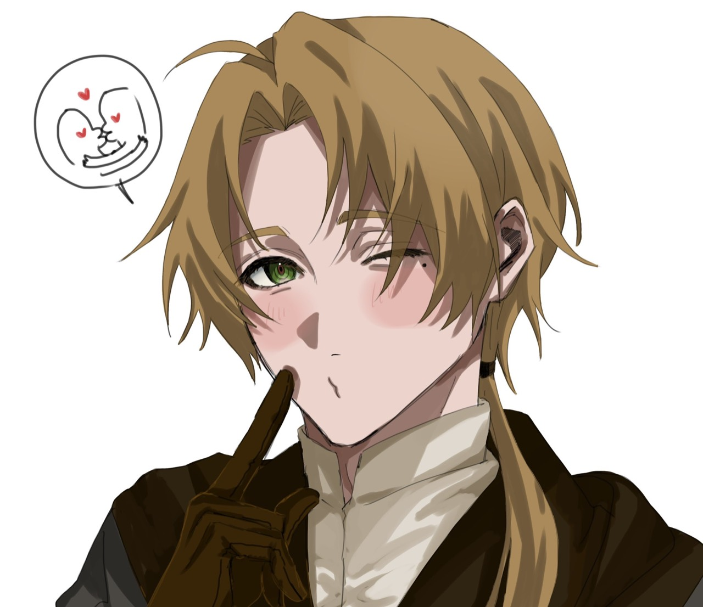

TRETARESIA RPG#59ข้อมูลตัวอย่าง: occupation = Water Mage, stats.rank = Intermediate, ability = Water Magic / Intermediate ป้ายเลือกข้อมูลจริงตามโหมด ไม่มีข้อมูลจะซ่อน ไม่จำเป็นต้องเป็นบอทแนวเวทมนตร์ Header และ Narrative ไม่มีพื้นหลัง
กรอบแชทด้านนอกจำลอง SillyTavern สำหรับดู layout เท่านั้น ปุ่มข้อมูลเปิดรายละเอียดตัวอย่าง ส่วนปุ่มบทพากย์แสดงคำอธิบายโดยไม่เรียก API เสียง ไม่ได้เชื่อมต่อเครื่องหรือเซิร์ฟเวอร์ของผู้ใช้
Preview แบบไฟล์เดียว · เทียบมือถือ · เทียบ PC · สีแดง · ดาวน์โหลด Preview